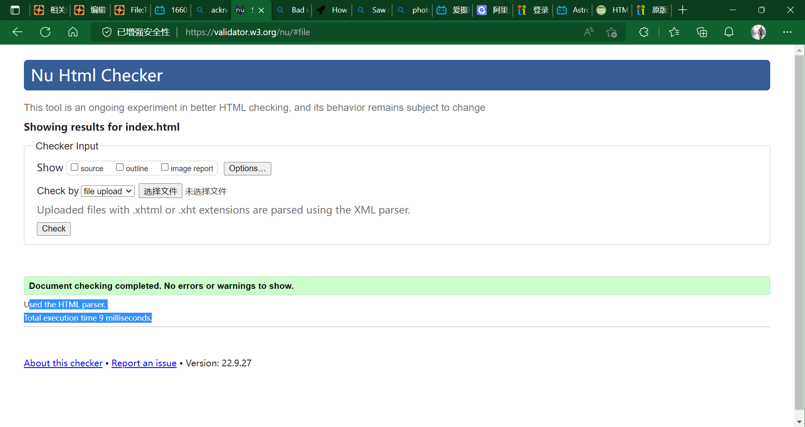

Go back to Home
Bing was banned (previous news)
根据中华人民共和国法律，Bing 中国已经被政府有关部门要求在中国内地暂停 “搜索自动建议” 功能 30 天。作为全球性搜索平台，Bing 将持续致力于尊重法治与用户获取信息的权利，在遵守法律的前提下最大限度地帮助客户寻找所需信息。
Bing China has been required by the relevant government agency to suspend the search auto suggestion feature in mainland China for 30 days under PRC laws. Bing is a global search platform and remains committed to respect the rule of law and users’ right to access information and to help users find information to the greatest extent feasible under applicable laws.


I have finished the Game (Orwell : keeping an eye on you) . I can't understand the ending...
It's a story about a radical team "Thought",which has made an act of terrorism and caused death cases.
At the end of the game, the "Thought" is considered a terrorism organization. And most of their members have been arrested.
Personally, although living under a surveillance society is unsuitable for me.
We really need some necessary CCTVs
to clean up terrorism.
P.S. the first picture seems to be a scene from1984
. Google it for further information.
Big Brother is watching you...
Happy Birthday! Motherland! 73th!
Today, I went to the QingYuan....Nothing special there.
Tomorrow will be Fantastic

Finally, the index.html has passed from the checking tool!
I have written an article about Dormitory.>>Go here.
P.S I'm not ready to public this article...

An update has been released...
- 移动“My Personally"到另一个页面。
- 更新了标签页图标。
- 新增了“调查”页面。
- 本地化了403错误页面。
- 更换了record页面与talk页面的图标。
- 请注意，目前移动设备无法访问此网站，需要
关闭防火墙
后方可访问。
- 更新了investigation页面的名字。
- 更换了网页的字体。
- 移除了index中
Today's video
的autoplay属性。
- 更新了investigation页面的图片。
- 修改了网页的背景颜色。
- 增加了“好友栏”这一页面。
- 更新了style.css文件。
- 已知问题：当修改部分内容时，部分浏览器可能存在延时等行为。
An update has been released...
- 增加了article和header属性。
- 在investigation.html中增加了一则
寻求证据
的标识。
愉快的隔离生涯结束了！在这11天里，我基本上没有更新wiki以及上号。。。
本人利用github开了一个新的，以后就用这个吧。。。
从2022年10月27日起，我已经在家中待了近一个月了。广州疫情丝毫不见好转，海珠区似乎仍然十分严重。从化等复课后又重新暂停线下教学。希望疫情能早日散去。
同时，奉劝各位同志一定要遵循抗疫要求！